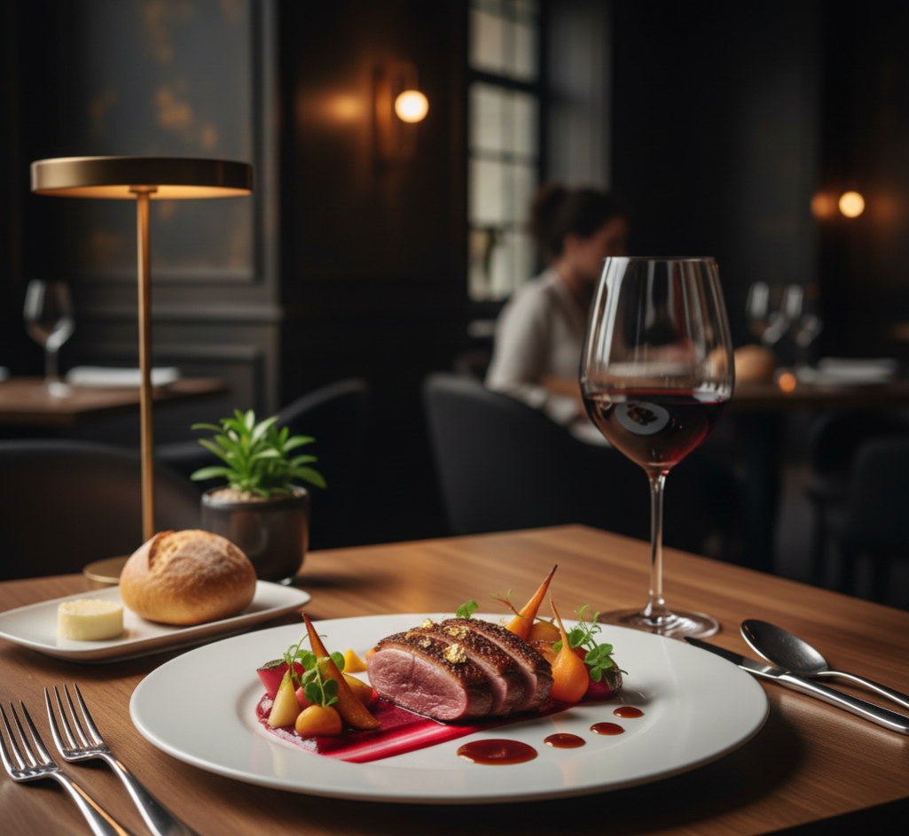

Gourmet & Experience
Hitra izbira kuhinje
Priljubljeno v vaši bližini
Nalaganje...
Izpostavljeno
Nalaganje...
Aktualne Akcije in Posebna Ponudba
Razišči nepozabna doživetja


×
Ime Restavracije
Kuhinja
Mesto
Ocena
Opis restavracije...
Proste ure se bodo prikazale, ko kliknete Rezerviraj mizo.
Meni
Aktualna Ponudba
Slike & Zemljevid
Ocene (0)
Posebna ponudba restavracije
Trenutno ni aktivne posebne ponudbe ali sezonskega menija.
Galerija slik
Zemljevid Lokacije
Trenutno ni na voljo podrobnih ocen za prikaz.
×
Prijava
Registracija
×
Izberite trajanje obiska
Ne pozabite: ob prihodu skenirajte QR kodo in pridobite točke!
Opozorilo
Prosimo, da upoštevate, da so prikazane informacije o razpoložljivosti in cenah zgolj informativne narave.